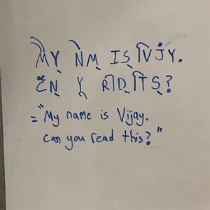
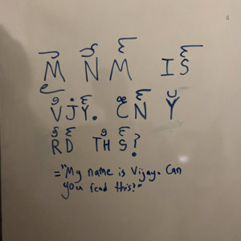

1) Given a silent MRI video of somebody talking, is it possible to train an ML model to detect what language they are speaking?
2) Suppose there exist two languages, language X and language Y. X and Y are sufficiently different from each other to be considered separate languages, but they still have a lot of shared vocabulary (e.g. English/French, Spanish/Italian). What is the most efficient way to generate sentences in language X that have high mutual intelligiblity for speakers of language Y?
For example, the French sentence below is mostly intelligible to a speaker of English:
"Le président Emmanuel Macron assure le peuple canadien que le gouvernement français va continuer à défendre le Canada contre la menace américain."
Even if you didn't catch any word, you can get the gist of it -- the French president Emmanuel Macron is assuring the "peuple canadien" (Canadian people) about something involving the "gouvernment français" (French government). Imagine reading thousands of sentences like this -- it would be a great way to "backdoor" into a new language using cognates you already know. Solving this problem will probably involve NLP, statistics, and some kind of cognate detection tool. I've made a simple demo of this concept here.
3) Is it possible to design a writing system that combines English consonant letters with Abugida-style vowel diacritics?
For example, the letter "B" would be written "B" and the letter "BA" would be written "Bा. "BI", "BO", and "BU" would be "िB" "Bो", and "Bु" respectively.
Here's an example:

Here's another example, with diacritics exclusively on top of the words:

4) Is it possible to generate a constructed language using AI? If the language was more "concise" than English (e.g. it takes 150 characters to express a thought that would take 200 characters in English), would there be any practical value to it over English? (Douglas Hofstader alludes to this idea in Godel, Escher, Bach when he talks about translation between languages by means of an intermediate langauge as opposed to dictionary lookup.)
5) In the Beginning of Infinity, physicist David Deutsch proposes the following experiment: find some robot that is already used in the real world and happens to be able to walk. Replace the robot's existing code with completely random code ("random numbers", in his words) and implement a system that allows small bits of the code to randomly "mutate", similar to genetic mutation. The idea behind using random numbers is to totally preclude the possibility that human knowledge is somehow being transfered to the robot. Given enough mutations and time, will the robot ever learn to walk? Has anybody every simulated this experiment?